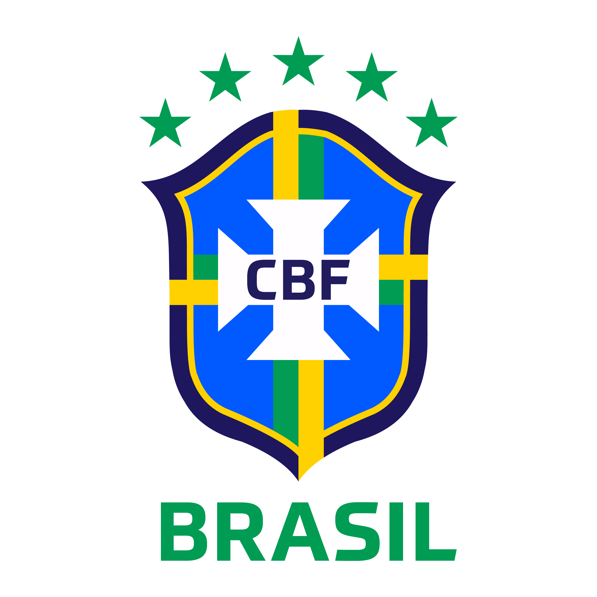
BRASIL COMO PAÍS SEDE DE COPAS DO MUNDO
- Breve resumo do tema abordado:
- Durante esses quase 1 século de Copa do Mundo a seleção canarinho já foi o País Sede em 1950 e 2014, nós separamos pontos importantes dessas copas.
Voltar ao Início
1950: A Construção do Gigante e a Simplicidade
Naquela época, o Brasil queria provar que era a "potência do futuro". A organização foi focada em centralizar tudo no Rio de Janeiro.
- Investimento e Engenharia: O grande investimento foi o Maracanã. Ele foi construído em apenas 22 meses. Para a época, foi um desafio de engenharia civil sem precedentes no país. O estádio ainda estava com andaimes e cheiro de cimento fresco no dia da abertura.
- Organização: A tecnologia de comunicação era o rádio. Milhões de brasileiros acompanharam a Copa pelas ondas curtas, e o "atraso" da informação criava uma mística sobre os jogos.
- O Formato: Foi a única edição da história que não teve uma "final" única eliminatória. As quatro melhores seleções (Brasil, Uruguai, Espanha e Suécia) jogaram um quadrangular final. Quem somasse mais pontos seria o campeão.
- A Campanha: O Brasil encantou o mundo com um futebol ofensivo, goleando a Suécia por 7 a 1 e a Espanha por 6 a 1. A seleção chegou ao último jogo contra o Uruguai precisando apenas de um empate para ser campeã.
- O "Maracanazo": No dia 16 de julho, diante de um público estimado em 200 mil pessoas, o Brasil saiu na frente com um gol de Friaça. Porém, o Uruguai virou o jogo para 2 a 1 com gols de Schiaffino e Ghiggia. O silêncio que tomou conta do estádio após o apito final ficou marcado na história como o "Maracanazo". O Brasil terminou como vice-campeão e abandonou o uso do uniforme branco para sempre.
- Curiosidade da Copa:
- A Desistência da Índia (O Mito dos Pés Descalços): Uma das lendas mais famosas é que a Índia desistiu porque a FIFA proibiu os jogadores de jogarem descalços. Embora a Índia realmente jogasse assim nas Olimpíadas de 1948, o motivo real da desistência foi a falta de orçamento para a viagem e o fato de a Federação Indiana valorizar mais as Olimpíadas do que a Copa na época. Como resultado, o grupo do Brasil ficou com apenas 3 seleções.
- O Uniforme "Amaldiçoado": O Brasil jogou toda a Copa de 1950 de branco com gola azul. Após a derrota na final, a cor foi considerada "agourenta" (deu azar). Foi então que o jornal Correio da Manhã lançou o concurso para o novo uniforme, vencido pelo design da "Amarelinha" que usamos até hoje. O Brasil nunca mais vestiu branco em uma final de Copa.
- Jogadores "Operários": Diferente dos craques multimilionários de 2014 e 2026, em 1950 muitos jogadores ainda tinham empregos comuns. O goleiro reserva do Brasil, por exemplo, era funcionário público. A preparação era rígida, mas os recursos médicos e nutricionais eram quase inexistentes comparados aos softwares de performance que você estuda hoje.
- O Maracanã Inacabado: No dia da abertura, o Maracanã ainda tinha andaimes, áreas sem pintura e muito entulho de construção nos arredores. O estádio só foi "finalizado" de verdade muitos anos depois, mas a pressão para realizar o evento era tão grande que a FIFA autorizou os jogos mesmo com o canteiro de obras visível.
Estádios da Copa de 1950
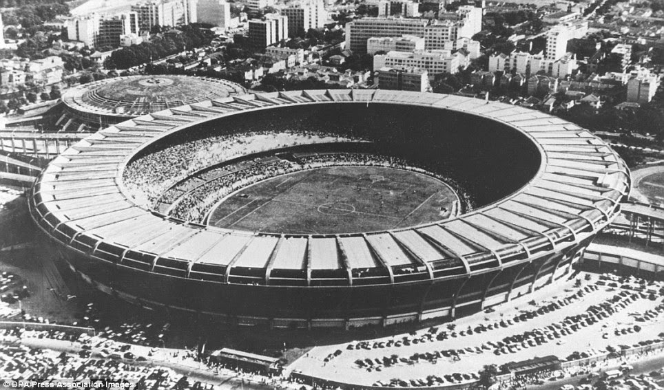
- Estádio do Maracanã (Rio de Janeiro)
- Nome Oficial: Estádio Municipal do Rio de Janeiro
- Capacidade na época: Cerca de 200.000 pessoas
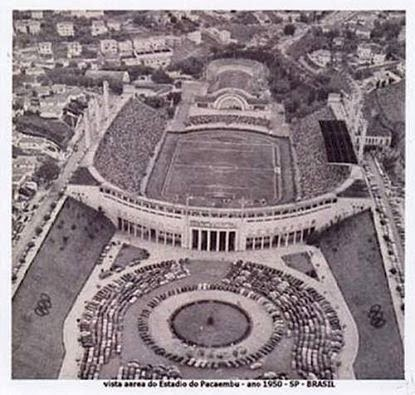
- Estádio do Pacaembu (São Paulo)
- Nome Oficial: Estádio Paulo Machado de Carvalho
- Capacidade na época: Cerca de 70.000 pessoas
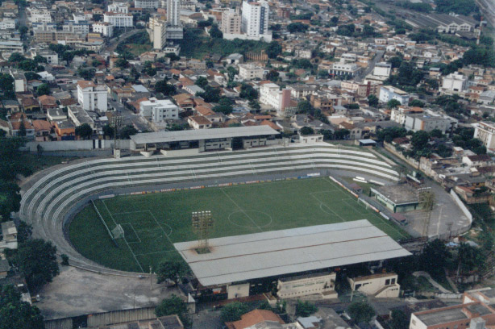
- Estádio Independência (Belo Horizonte)
- Nome Oficial: Estádio Sete de Setembro
- Capacidade na época: Cerca de 30.000 pessoas
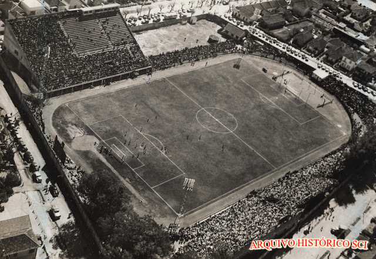
- Estádio dos Eucaliptos (Porto Alegre)
- Nome Oficial: Estádio Ildefonso Pinto
- Capacidade na época: Cerca de 30.000 pessoas
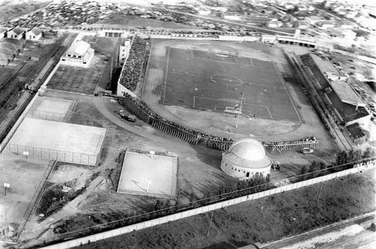
- Estádio da Vila Capanema (Curitiba)
- Nome Oficial: Estádio Durival Britto e Silva
- Capacidade na época: Cerca de 15.000 pessoas
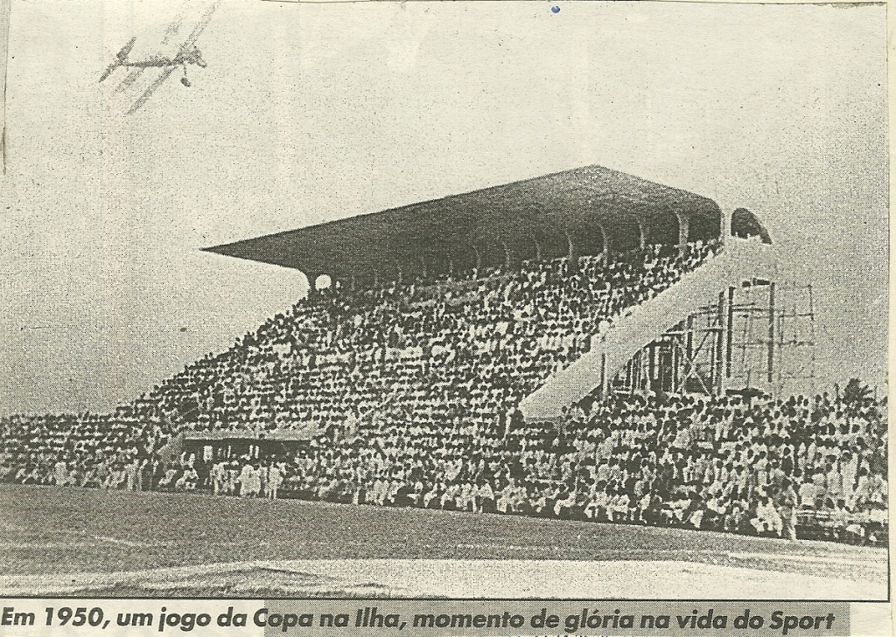
- Estádio da Ilha do Retiro (Recife)
- Nome Oficial: Estádio Adelmar da Costa Carvalho
- Capacidade na época: Cerca de 20.000 pessoas
2014: O Padrão FIFA e os Contrastes Sociais
Em 2014, o cenário foi muito mais complexo, envolvendo política, tecnologia de ponta e grandes debates públicos.
- Investimentos Bilionários: O custo total foi estimado em cerca de R$ 25 bilhões. O foco não foi apenas estádios (as "Arenas Padrão FIFA"), mas também aeroportos e obras de mobilidade urbana (BRTs e VLTs), muitas das quais não ficaram prontas a tempo.
- A "Rejeição" e os Protestos: Diferente de 1950, houve uma forte onda de protestos antes da bola rolar. O slogan "Não vai ter Copa" ficou famoso em 2013 durante a Copa das Confederações. A população questionava por que investir tanto em estádios e não em "hospitais e escolas padrão FIFA".
- Tecnologia e Logística: Foi a Copa da conectividade. Pela primeira vez, o Brasil instalou redes 4G robustas e tecnologia de linha de gol (sensores para saber se a bola entrou). A logística de transporte das seleções foi um desafio de software e planejamento, coordenando voos fretados em um país de dimensões continentais.
- O Clima: Fora de campo, a Copa foi um sucesso de público e integração. Milhares de estrangeiros lotaram as "Fan Fests" e as ruas brasileiras. Foi batizada informalmente de "Copa das Copas" pelo alto número de gols e pela qualidade dos jogos.
- A Campanha Brasileira: O Brasil, comandado por Luiz Felipe Scolari (o técnico do Penta), avançou em primeiro no seu grupo. Passou pelo Chile nos pênaltis nas oitavas e venceu a Colômbia nas quartas, mas perdeu seu principal jogador, Neymar, por lesão, e o capitão Thiago Silva por suspensão. Na Semifinal acabou sendo marcado o nosso maior vexame dentro da nossa própria casa, o famoso 7x1 contra a Alemanha.
- Curiosidades da Copa
- O "Mineiraço": Na semifinal, em Belo Horizonte, o Brasil sofreu sua derrota mais pesada: 7 a 1 contra a Alemanha. Os alemães marcaram cinco gols em apenas 29 minutos de jogo. O Brasil terminou a competição em 4º lugar, após perder a disputa de terceiro para a Holanda, enquanto a Alemanha se sagrou tetracampeã no Maracanã ao vencer a Argentina.
- A seleção da Alemanha deu uma aula de Planejamento de Projeto. Eles não gostaram de nenhuma das opções de centros de treinamento oferecidas pela organização. A solução: Eles investiram e construíram o próprio resort em Santa Cruz Cabrália (BA). Após a Copa, o CT foi doado para a comunidade local. Esse nível de isolamento e controle de dados foi um dos "segredos" para o título.
- Pela primeira vez, o Brasil precisou seguir um caderno de encargos extremamente rígido. Isso deu origem às Arenas Multiuso. Muitos estádios foram construídos com sistemas de captação de água da chuva e painéis solares para obter a certificação LEED (Green Building), como o Mineirão e a Arena Pernambuco. O Custo dos "Elefantes Brancos": Algumas sedes, como Cuiabá, Manaus e Brasília, não tinham times nas divisões principais do futebol brasileiro na época, o que gerou críticas sobre a manutenção desses " hardwares" caros após o evento.
- O IBC (International Broadcast Centre), montado no Rio de Janeiro, foi o coração tecnológico do evento. Foi a primeira Copa com transmissão em 4K (Ultra HD) para alguns mercados e a primeira com uso massivo de Streaming. A infraestrutura de fibra óptica instalada nos estádios teve que suportar picos de tráfego de dados gigantescos, já que todos os torcedores estavam usando redes sociais simultaneamente.
- O nome "Fuleco" (Futebol + Ecologia) foi escolhido por votação popular, mas gerou polêmicas. Ele representa o Tatu-bola, uma espécie brasileira em extinção. O objetivo era usar o marketing da Copa para levantar fundos para a conservação da espécie, embora as ONGs ambientais tenham criticado a falta de repasses reais após o torneio.
- A FIFA exigiu que todas as 12 cidades tivessem as "FIFA Fan Fests". Eram eventos gratuitos com telões gigantes em locais icônicos (como a Praia de Copacabana ou o Vale do Anhangabaú). Essas áreas eram consideradas "território FIFA", com regras estritas sobre quais marcas poderiam ser vendidas lá dentro, o que gerou muitos debates sobre a soberania das cidades.
Estádios da Copa de 2014
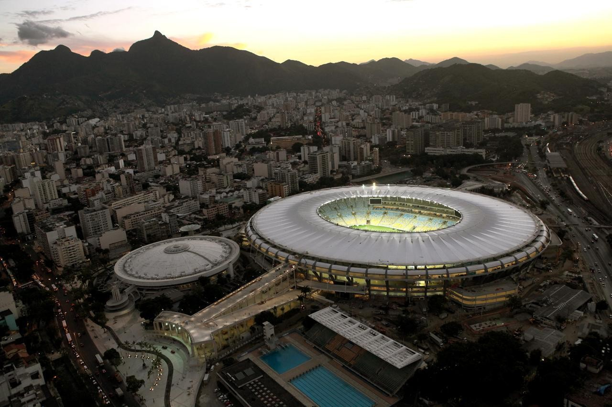
- Estádio do Maracanã (Rio de Janeiro)
- Nome Oficial: Estádio Jornalista Mário Filho
- Capacidade na época: Cerca de 75.000 pessoas
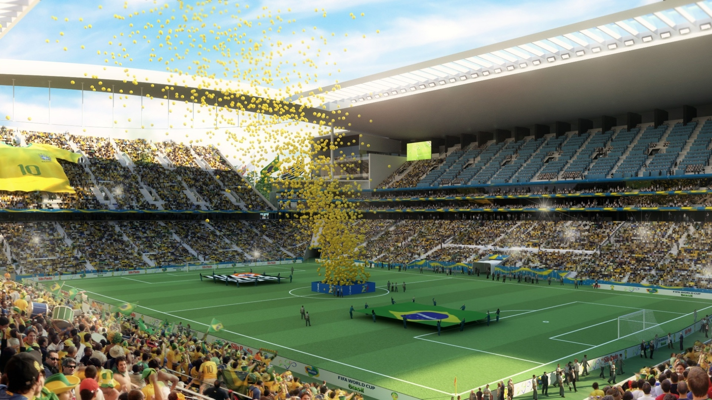
- Arena de São Paulo (São Paulo)
- Nome Oficial: Arena Corinthians
- Capacidade na época: Cerca de 63.000 pessoas
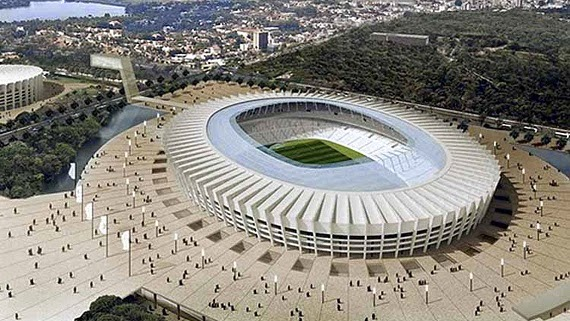
- Estádio Mineirão (Belo Horizonte)
- Nome Oficial: Estádio Governador Magalhães Pinto
- Capacidade na época: Cerca de 58.000 pessoas
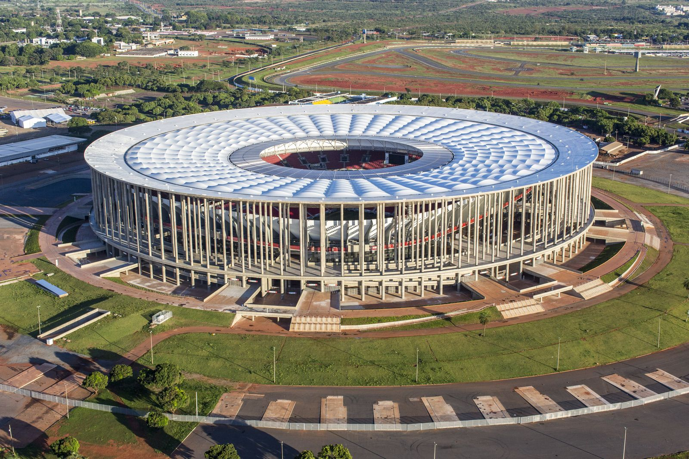
- Estádio Nacional de Brasília (Brasília)
- Nome Oficial: Estádio Mané Garrincha
- Capacidade na época: Cerca de 69.000 pessoas

- Estádio Beira-Rio (Porto Alegre)
- Nome Oficial: Estádio José Pinheiro Borda
- Capacidade na época: Cerca de 43.000 pessoas
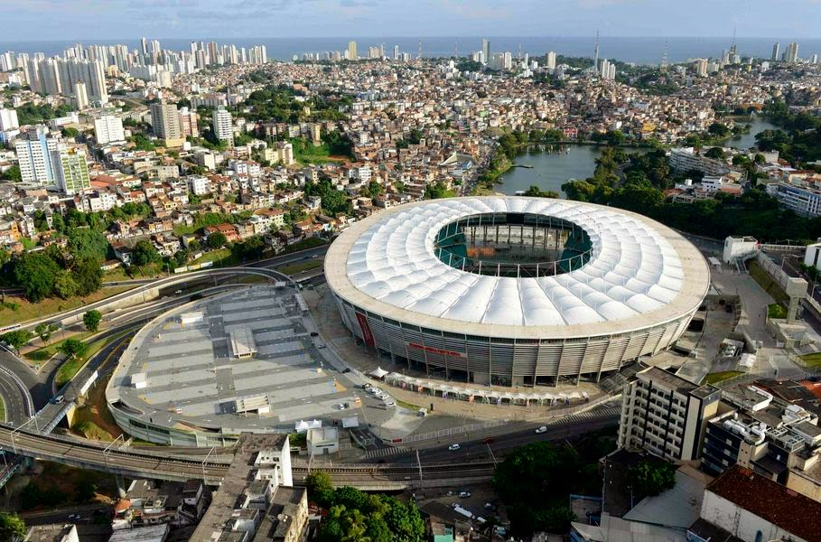
- Arena Fonte Nova (Salvador)
- Nome Oficial: Estádio Octávio Mangabeira
- Capacidade na época: Cerca de 52.000 pessoas
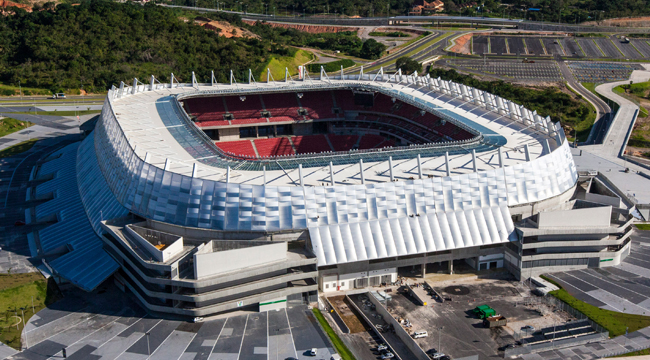
- Arena Pernambuco (Recife)
- Nome Oficial: Arena de Pernambuco
- Capacidade na época: Cerca de 43.000 pessoas
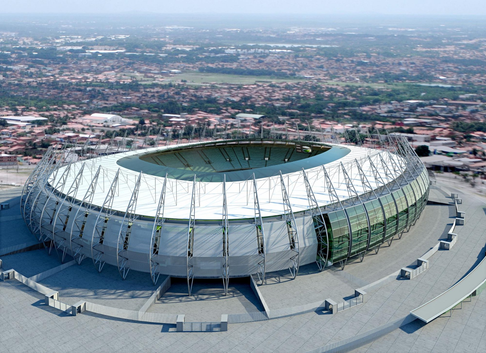
- Estádio Castelão (Fortaleza)
- Nome Oficial: Estádio Governador Plácido Castelo
- Capacidade na época: Cerca de 60.000 pessoas
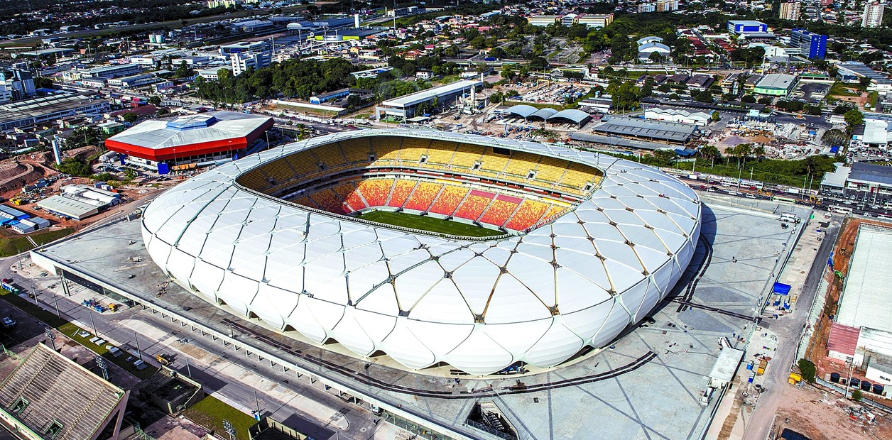
- Arena da Amazônia (Manaus)
- Nome Oficial: Arena da Amazônia
- Capacidade na época: Cerca de 40.500 pessoas
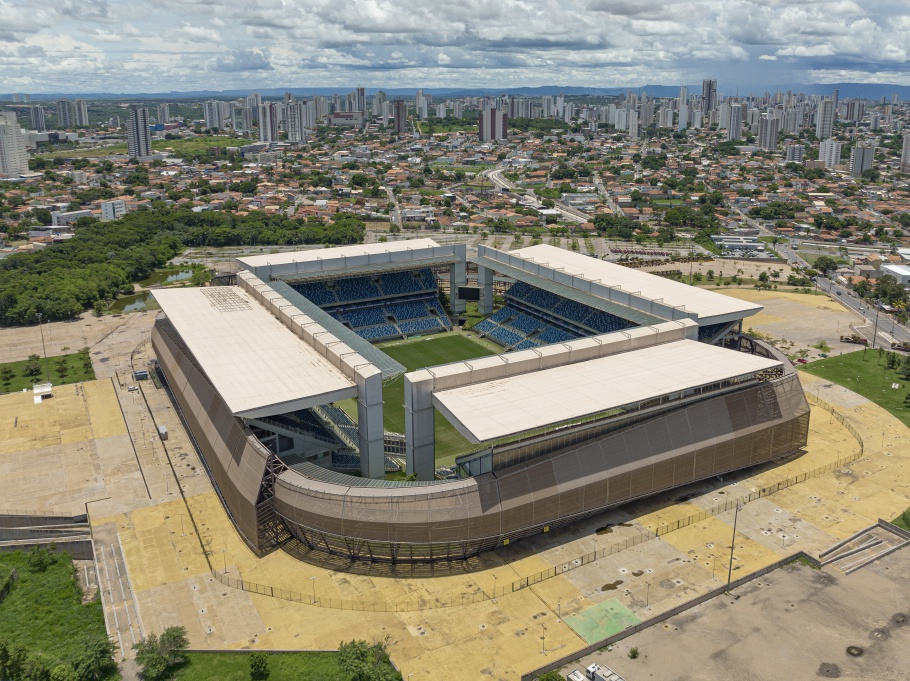
- Arena Pantanal (Cuiabá)
- Nome Oficial: Arena Pantanal
- Capacidade na época: Cerca de 41.000 pessoas
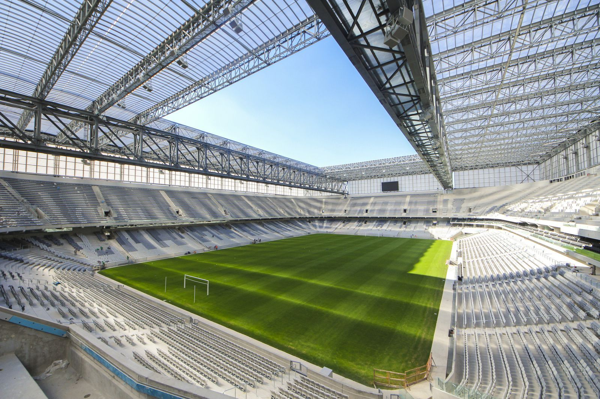
- Arena da Baixada (Curitiba)
- Nome Oficial: Estádio Joaquim Américo Guimarães
- Capacidade na época: Cerca de 40.000 pessoas
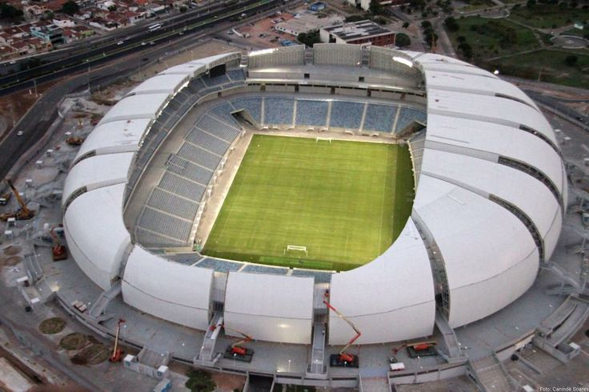
- Arena das Dunas (Natal)
- Nome Oficial: Arena das Dunas
- Capacidade na época: Cerca de 40.000 pessoas